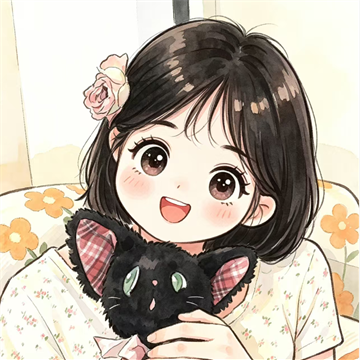

你好，我是 12
UI/UX 与视觉设计师 · 现居成都 · 接受远程协作
复合型 UI/UX 与视觉设计师。深耕 C 端产品体验设计，擅长将复杂的业务需求转化为清晰、可落地的交互方案与高保真界面，精通响应式 Web 与移动端设计，能妥善处理多语言及各类异常状态展示。
具备扎实的排版、色彩与字体功底，不仅能主导产品端界面与设计规范搭建，更能独立产出高质量营销素材（Banner / 社媒图）并完成基础营销短视频（剪辑 / 动效）的制作。
具备丰富的敏捷开发与驻场经验，对设计还原度与交付质量有极高要求（历史还原度 98%）。在 AI 赋能方面，熟练使用 ChatGPT、Lovart 等工具进行创意发散与提效，致力于用设计驱动用户增长与业务转化。
数字概览
技能与工具
按熟练度排序
- UI 设计
- 视觉设计
- 设计系统
- 动效
- C 端社交
- B 端大屏
- 数据可视化
- Figma
- MasterGo
- Adobe XD
- AIGC（ChatGPT / Lovart）
擅长把混乱的界面收敛成有秩序的系统：先从信息结构入手，再定组件，最后才是视觉。精通 iOS / Web 端设计规范（HIG），具备丰富的驻场与敏捷开发经验，能直接和前端一起对 token 与标注，保障设计稿落地还原度达 95%–98%。
工作经历
2023.04 — 至今
-
2025.05 — 2026.11
UI 设计师 · 成都月辉星煜有限公司
负责垂直领域社交直播 iOS App 视觉设计与体验迭代。主导直播间重构，结合微动效与毛玻璃效果打造沉浸式直播体验。负责社交互动全链路优化，并严格遵循 Apple HIG 规范，从 0 到 1 搭建专属社交组件库，保障还原度 95% 以上。
-
2023.04 — 2025.04
UI 设计师 · 成都景晖科技有限公司
负责「啾啾」情感倾诉社交 App 整体 UI 视觉与动效规范；独立承担凉山州政务大屏及采编审媒资系统（B 端）设计；负责银行金融 App（出海）及学英语平台 App 的 UI 设计。建立组件化设计系统，成功解决 15+ 项还原问题，设计匹配度达 98%。
联系方式
通常 24 小时内回复
和我合作会经历什么
- 先花半天对齐问题与成功标准，再开始画界面。
- 每轮评审给出可执行的选项，而不是只有一张漂亮图。
- 交付物包含组件、标注、状态与边界情况说明。
- 上线后参与一次走查，把问题收进下一版规范。